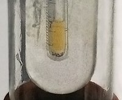

Numero atomico: 9
Massa atomica: 19,00
Temperatura di fusione (°C): -220
Temperatura di ebolizione (°C): -188
Energia di prima ionizzazione (kj/mol): 1681
Elettronegatività (secondo Pauling): 3,98
Densità: 1,70
Numeri di ossidazione: -1
Configurazione elettronica: 1s2, 2s2, 2p5
Maggiori Informazioni